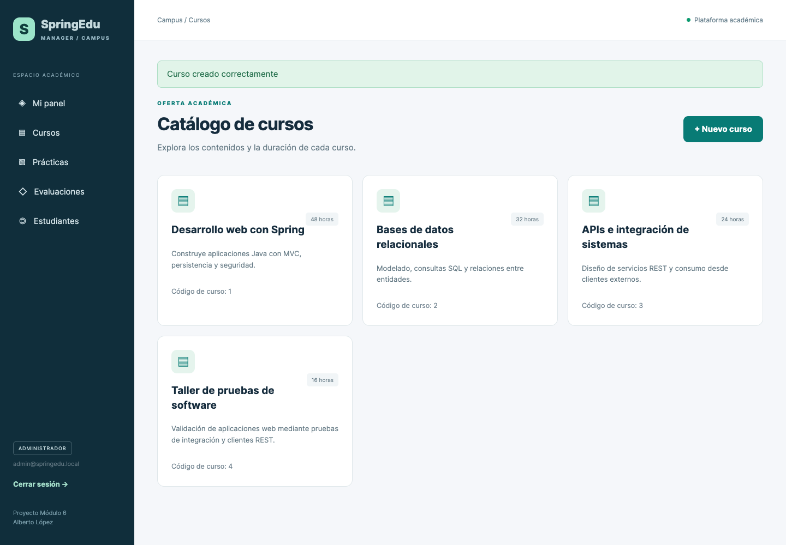
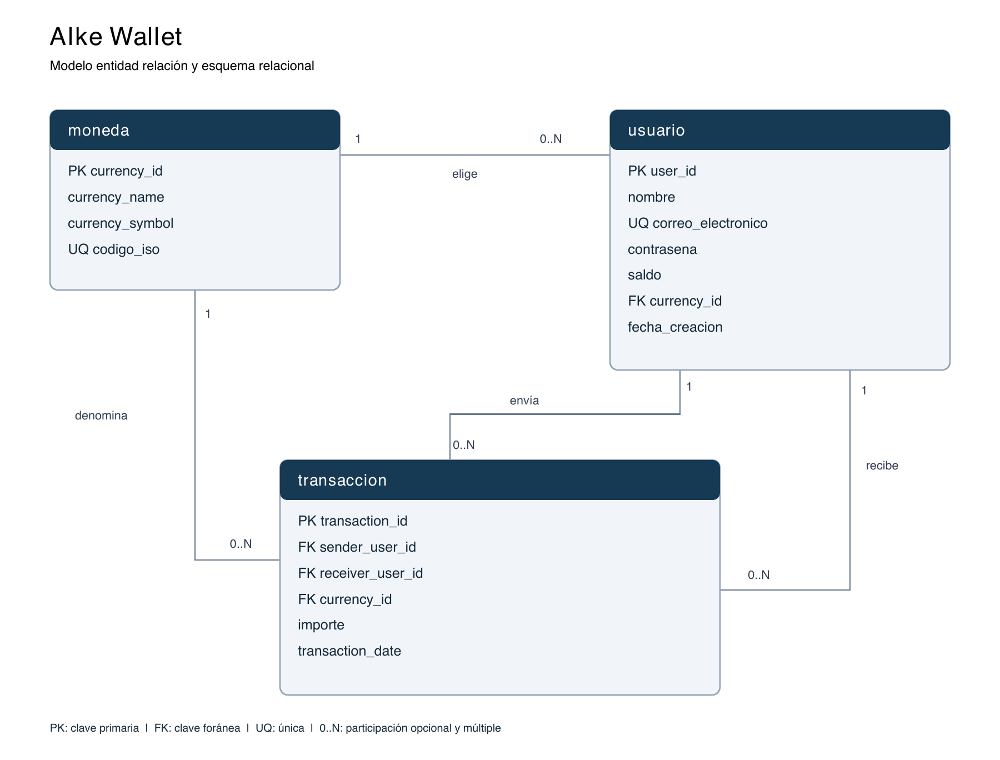
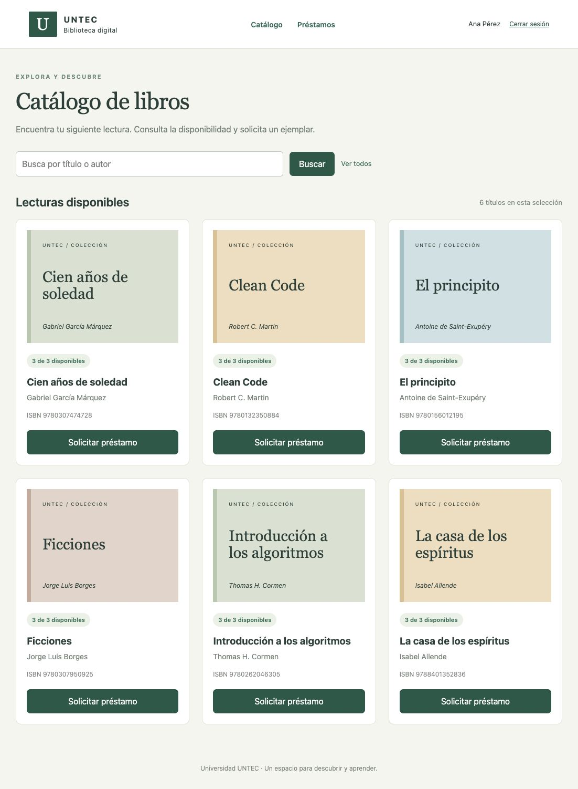

Portafolio técnico
Tres proyectos.
Aprendizajes concretos.
Proyectos formativos con código, instrucciones y evidencias. Las capturas corresponden a su ejecución local; las aplicaciones Java requieren un servidor para funcionar.
SpringEduManager
Actividad: centralizar estudiantes, cursos, inscripciones, prácticas y evaluaciones de un bootcamp.

Desafío y solución
El desafío fue proteger la información académica sin duplicar reglas entre la web y la API. La solución separa controladores, servicios y repositorios, valida las entradas y reserva la gestión a ADMIN. Cada estudiante consulta sus propios registros.
Herramientas y decisiones
Java 21, Spring Boot, Spring MVC, JPA, Spring Security, Thymeleaf, H2 y Maven. Spring Boot facilita una entrega ejecutable; los servicios concentran reglas reutilizables. Los DTO limitan los campos editables, el registro público asigna USER y H2 en archivo conserva los datos tras reiniciar.
Métricas y evidencias
- 20 pruebas registradas: 18 de integración y 2 con RestTemplate sobre HTTP real; sin fallos ni errores.
- CRUD comprobado para cursos y estudiantes.
- Acceso 403 de USER a funciones administrativas y persistencia comprobada tras reinicio.
Estas cifras proceden de los registros del proyecto. No equivalen a cobertura total de código ni a resultados en producción.
Aprendizajes y habilidades
Arquitectura por capas, modelado relacional, REST, validación y pruebas de integración. Aprendí a distinguir autenticación de autorización y a respaldar las reglas de negocio con comprobaciones en el servidor.
Por qué lo elegí
Conecta mi experiencia en requisitos e integración con una implementación completa y verificable. Permite explicar tanto decisiones de desarrollo como criterios de operación.
Repositorio e instrucciones de ejecución ↗ · Resultados de pruebas ↗
AlkeWallet SQL

Necesidad: representar una billetera virtual con usuarios, monedas y movimientos sin comprometer los saldos.
Solución: esquema relacional MySQL con integridad referencial y una rutina de transferencia que actualiza saldos e historial de manera atómica. Revierte ante fondos insuficientes o entradas inválidas.
Tecnologías: SQL, MySQL 8, InnoDB, transacciones y modelo entidad-relación.
Resultados documentados: 30 comprobaciones aprobadas, 50 transferencias adicionales y conciliación final de saldos. Las métricas son de validación local, con datos ficticios.
Aprendizaje: una transferencia implica consistencia, concurrencia y manejo de errores; no basta con ejecutar dos actualizaciones independientes.
Biblioteca Digital UNTEC

Necesidad: gestionar libros, usuarios, préstamos y devoluciones con disponibilidad consistente.
Solución: aplicación Java web con perfiles de administrador y estudiante, control de existencias y restricciones sobre préstamos duplicados o sin disponibilidad.
Tecnologías: Java, Servlets, JSP/JSTL, MVC, DAO, JDBC, H2 y Tomcat 9.
Evidencias: código fuente, instrucciones de despliegue, capturas y validación disponibles en el repositorio.
Aprendizaje: separar acceso a datos y presentación, mantener el historial de préstamos y validar las acciones del usuario en el servidor.